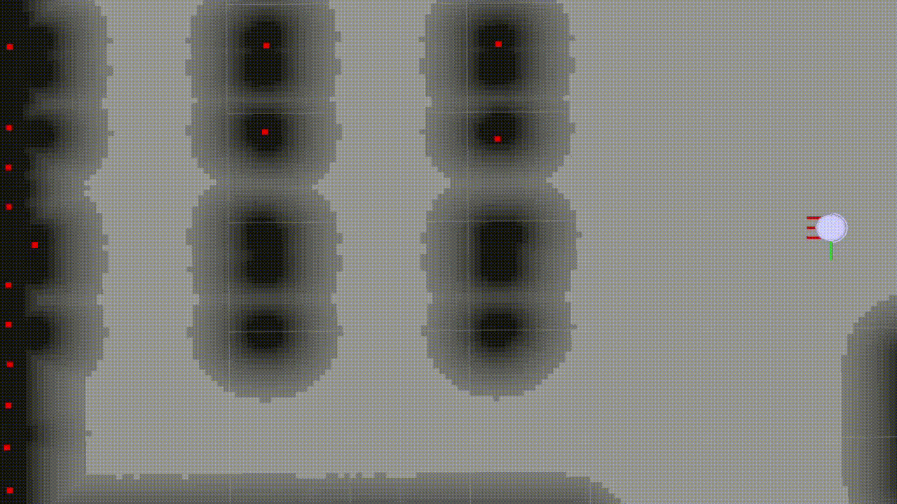
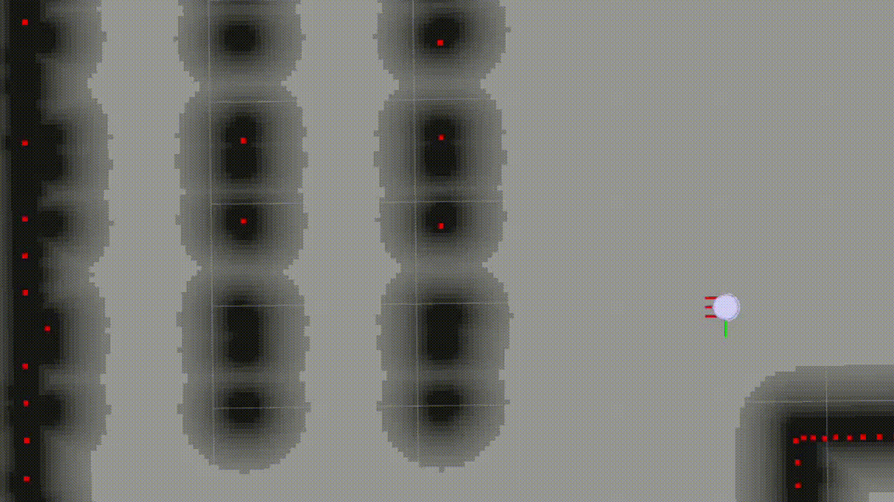
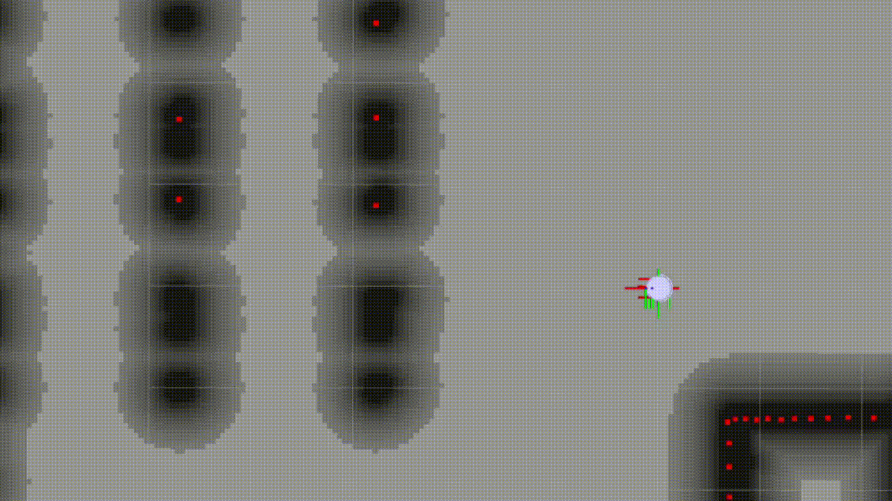
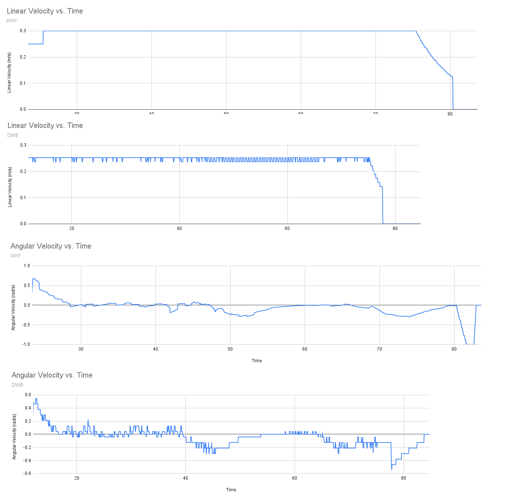

Localization & Navigation
Overview
Localization and navigation allow Titan Robot to estimate its position within a known map and autonomously move to target locations.
This section explains how localization and navigation are performed using ROS 2 Navigation (Nav2).

Titan Robot relies entirely on Nav2 for: - Localization using a pre-built map - Global and local path planning - Obstacle avoidance - Velocity command generation

Localization Concepts
What is Localization?
Localization is the process of estimating the robot’s pose (x, y, θ) within a known map.
Once a map is provided, the robot continuously estimates its position using sensor data and odometry.
Nav2 uses a probabilistic localization approach (AMCL) to localize the robot on the map.
Inputs Used for Localization
| Input | Source |
|---|---|
| Map | Pre-built occupancy grid |
| Laser scans | 2D LIDAR (/scan) |
| Odometry | Encoder-based odometry (/odom) |
| TF | Coordinate frame transforms |
Prerequisites
Before starting localization and navigation, ensure that:
- A valid map file (.yaml and .pgm) is available
- Robot bringup is running
- LIDAR is publishing scan data
- Odometry is being published correctly
Launching Localization and Navigation
Localization and navigation are launched together using Nav2 bringup.
Run the following command:
ros2 launch nav2_bringup bringup.launch.py map:=/absolute/path/to/map.yaml
This launch file starts: - Map server - Localization (AMCL) - Global planner - Local controller - Costmaps - Behavior tree navigator
Initial Pose Estimation

After Nav2 starts, the robot must be given an initial pose.
In RViz2:
- Set Fixed Frame to
map - Select the 2D Pose Estimate tool
- Click on the robot’s approximate position on the map
- Set the robot’s orientation
The localization system will converge to the correct pose within a few seconds.
Verifying Localization
Localization is working correctly if:
- The robot model aligns with the map
- Laser scans match map walls
- Small movements update the pose smoothly
- The pose does not jump unexpectedly
Navigation Overview
Navigation allows the robot to autonomously move to a target pose while avoiding obstacles.
Nav2 handles: - Global path planning - Local obstacle avoidance - Velocity command generation
Velocity commands are published to the /cmd_vel topic and sent to the ESP32.
Planners
Global Planner Evaluation (Nav2)
This document presents a structured evaluation of different global planners available in ROS 2 Nav2.
The planners are compared using quantitative path metrics and qualitative visual inspection to understand their behavior during navigation.
Global Planner Overview
A global planner is responsible for generating a collision-free path from the robot’s current pose to a goal pose using the global costmap.
The output of the planner is a discrete sequence of waypoints that the local controller later tracks.
The quality of this path directly affects navigation efficiency, smoothness, and controller performance.
Planners Evaluated
NavFn
NavFn is a classical grid-based planner that computes paths using Dijkstra’s algorithm over the global costmap.
It guarantees a cost-optimal solution with respect to the costmap but restricts motion to grid-aligned directions.
Due to this grid constraint, paths often contain sharp turns and unnecessary zig-zag behavior.

Smac Planner 2D
Smac Planner 2D is a search-based A* planner that uses cost heuristics and motion primitives.
It expands the state space beyond simple grid neighbors, allowing smoother transitions and more kinematically feasible paths.
The planner balances optimality with execution feasibility, making it well suited for differential-drive robots.

Theta*
Theta is an extension of the A algorithm that enables any-angle planning by allowing parent reassignment through line-of-sight checks.
Instead of being constrained to grid directions, the planner directly connects nodes when a clear path exists.
This typically results in shorter and smoother paths with fewer heading changes.

Planner Evaluation Metrics
Path Length
Path length represents the total geometric distance of the planned path from the robot’s start position to the goal. It is computed as the sum of Euclidean distances between consecutive waypoints along the global plan. This metric provides a direct indication of how efficiently the planner connects the start and goal positions. Shorter paths generally imply reduced travel distance and potentially lower execution time, assuming the controller can track the path effectively.
Path Smoothness
Path smoothness captures how much the direction of motion changes along the planned path. It is calculated by summing the absolute angular differences between consecutive path segments, expressed in radians. A smoother path exhibits gradual heading changes, which reduces steering effort and makes the path easier for local controllers to follow. Higher smoothness values indicate frequent or sharp directional changes, often arising from grid constraints or obstacle avoidance behavior.
Replan ID
The replan ID is an index assigned to each new global path generated during navigation. As the robot moves and the planner replans, this index increments sequentially. Tracking metrics against the replan ID allows observation of how path quality evolves as the robot approaches the goal and the remaining path shortens.
Experimental Results
Path Length Comparison
The path length comparison shows a consistent reduction in path length as the robot progresses toward the goal. SmacPlanner 2D generally produces the shortest paths due to its any-angle planning capability, allowing direct connections when line-of-sight exists. Smac Planner 2D follows closely, while NavFn typically generates slightly longer paths because of its grid-aligned expansion.

Path Smoothness Comparison
The smoothness comparison reveals that Smac Planner 2D produces the straightest and most consistent paths overall. NavFn follows with moderate smoothness, while Theta* exhibits higher variation due to occasional aggressive shortcuts and line-of-sight connections that introduce sharper angular transitions. This behavior becomes more visible during replanning phases as the robot nears the goal.

Summary
Theta* produces the shortest paths but shows higher variability in smoothness.
Smac Planner 2D generates the smoothest and most stable paths across replans.
NavFn provides predictable behavior but remains constrained by grid-based motion.
Controllers
Local Controller Evaluation (Nav2)
This document presents a structured evaluation of different local controllers available in ROS 2 Nav2.
The controllers are compared using time-based and motion-based metrics to understand how they execute a given global path and drive the robot toward the goal.
Local Controller Overview
A local controller is responsible for converting a global path into real-time velocity commands (cmd_vel) that move the robot safely and efficiently.
While the global planner decides where the robot should go, the controller decides how the robot should move at each instant.
Controller behavior directly affects motion smoothness, responsiveness, stability, and time to reach the goal.
Controllers Evaluated
Regulated Pure Pursuit (RPP)
Regulated Pure Pursuit is a geometric path-tracking controller based on the pure pursuit algorithm.
It selects a lookahead point on the global path and computes curvature commands that steer the robot toward that point.
Regulation terms are added to limit velocity near obstacles, sharp turns, or goal proximity.
This results in smooth, predictable motion with minimal oscillations, making RPP well suited for structured environments and clean global paths.

Dynamic Window Approach (DWB)
DWB is a trajectory-sampling controller that evaluates multiple velocity commands in the robot’s dynamic window.
Each candidate trajectory is forward-simulated and scored using a set of critics such as path alignment, goal distance, obstacle cost, and rotation penalties.
The command with the lowest cost is selected at each control cycle.
While highly flexible and reactive, DWB can exhibit oscillatory behavior if not carefully tuned, especially in open or cluttered spaces.

Controller Evaluation Metrics
Time to Goal
Time to goal represents the total duration taken by the robot to reach the navigation goal after a navigation request is issued.
It is measured from the moment the controller begins execution until the goal is reported as reached.
This metric reflects overall controller efficiency, including responsiveness, stability, and interaction with the planner.
Instantaneous Speed
Instantaneous speed captures the robot’s linear velocity at each control timestep.
It is obtained directly from velocity commands (cmd_vel) published by the controller, allowing fine-grained observation of motion behavior.
Tracking instantaneous speed over time reveals how aggressively or conservatively a controller drives the robot and how it responds to path curvature and goal proximity.
Acceleration
Acceleration is derived from the change in instantaneous speed over time.
It provides insight into motion smoothness and dynamic stability.
High acceleration spikes indicate abrupt speed changes, which may lead to wheel slip, poor tracking, or uncomfortable motion in real robots.
Experimental Results
Time to Goal Comparison
The time-to-goal results show that Regulated Pure Pursuit consistently reaches the goal faster in this setup due to its direct path-following behavior and minimal hesitation.
DWB, while robust, tends to take longer due to frequent re-evaluation of trajectories and conservative velocity choices near obstacles.
Speed Profile Comparison
The speed profile comparison highlights a clear behavioral difference between the controllers.
RPP maintains a relatively smooth and stable velocity profile, gradually slowing near turns and the goal.
DWB shows noticeable fluctuations in speed caused by trajectory switching and critic competition.

Summary
Regulated Pure Pursuit provides smooth, stable motion with predictable speed behavior and faster goal completion.
Dynamic Window Approach offers strong obstacle awareness and flexibility but introduces speed oscillations and longer execution times.
For structured environments with reliable global paths, RPP delivers superior execution quality, while DWB remains valuable in highly dynamic or cluttered scenarios.
Sending Navigation Goals
To send a navigation goal:
- Open RViz2
- Set Fixed Frame to
map - Select 2D Goal Pose
- Click on the desired target location
- Set the target orientation
Nav2 will compute a path and drive the robot to the goal.
Costmaps

Global Costmap
- Based on the static map
- Used for long-range path planning
- Represents static obstacles
Local Costmap
- Built from real-time sensor data
- Used for obstacle avoidance
- Updates continuously during navigation
Navigation Behavior

During navigation, the robot:
- Plans a path to the goal
- Continuously updates the path
- Avoids static and dynamic obstacles
- Stops when the goal is reached
Issues
Common Localization Issues
| Issue | Possible Cause | Solution |
|---|---|---|
| Robot pose jumps | Incorrect initial pose | Reset pose using RViz |
| Slow convergence | Odometry drift | Improve encoder calibration |
| Laser mismatch | Incorrect TF frames | Verify LIDAR transforms |
Common Navigation Issues
| Issue | Possible Cause | Solution |
|---|---|---|
| Robot does not move | No velocity commands | Check Nav2 nodes and /cmd_vel |
| Oscillations | Aggressive controller tuning | Tune controller parameters |
| Collisions | Incorrect costmap setup | Adjust footprint and inflation |
| No path generated | Localization failure | Verify map and pose accuracy |
Safety Guidelines
- Test navigation in open environments
- Limit maximum speed during initial testing
- Always monitor the robot during autonomous runs
- Keep an emergency stop accessible
Performance Tuning Tips
- Ensure odometry is accurate before tuning Nav2
- Verify TF tree correctness
- Reduce costmap resolution if CPU usage is high
- Avoid running heavy perception nodes simultaneously
Your robot is now fully capable of localization and autonomous navigation using Nav2 🚀